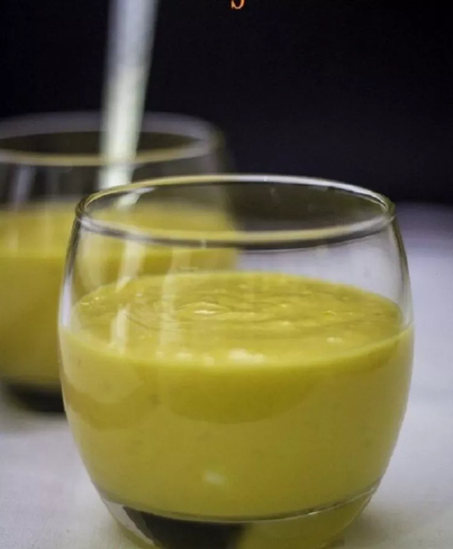

Mango Lassi

Description
Mango lassi is very rich and luxurious drink with yogurt and mangoes. It
is the perfect summer drink when served chilled.
Ingredients
- 1 ½ cups mangos - peeled, seeded, chopped, and chilled
- 1 ½ cups plain yogurt
- ½ cup cold milk
- 2 tablespoons heavy cream
- 2 tablespoons confectioners' sugar
- ½ teaspoon ground cardamom
Steps
-
Combine mangos, yogurt, milk, cream, confectioners' sugar, and cardamom
in a blender.
- Blend until smooth and frothy.
- Pour into glasses and serve immediately.